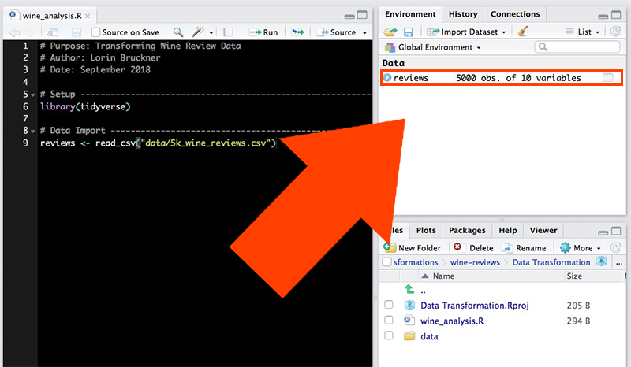
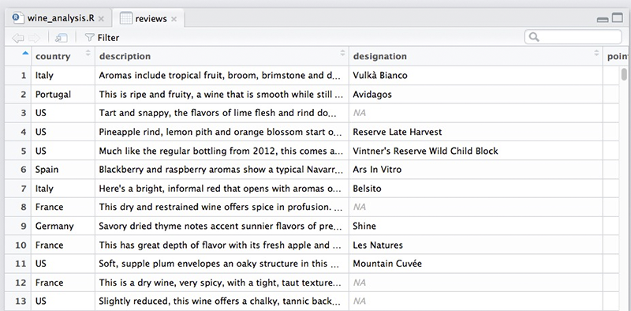

# Purpose: Transforming Wine Review Data
# Author: Nuvan Rathnayaka
# Date: January 2019
# Setup -----------------------------------------------------------
library(tidyverse)beginR: Data Transformations
Data and other downloads
Today
This workshop aims to cover:
- Review of Previous Topics
- Starting a New Project
- Loading the tidyverse
- Importing Data
- Data Transformations
- Filtering Data
- Relational and Assignment Operators
- Reordering Data (arrange)
- Selecting Data
- Renaming Columns
- Adding new Variables (mutate)
- Summerising Data
- R for Data Science Chapter 5
Start a New Project in R
It is best practice to set up a new directory each time we start a new project in R. To do so, complete the following steps:
- Go to File > New Project > New Directory > New Project.
- Type in a name for your directory and click Browse. Be sure to pick a place for your directory that you will be able to find later.
- Go to Finder on Mac or File Explorer on PC and find the directory you just created.
- Inside your project directory, create a new folder called data.
- Download or copy the data file (5k_wine_reviews.csv) into the data folder.
- Go to File > Save As to give your R script a name and save it in your project directory.
Loading the tidyverse
The first few lines of our R script are made up of comments to document the script’s purpose, creator and date. Next, we use the library() function to load any packages that our script will need to run. In this workshop, we are using the tidyverse package for all of our projects.
Importing Data
We use the read_csv() function to import our data.
# Data Import ------------------------------------------------------
reviews <- read_csv("data/5k_wine_reviews.csv")When we use read_csv(), our data is stored as a type of object in R called a data frame. One of the nice things about data frames is that we can see a visual representation of them using R Studio. Take a look at your Environment tab in the upper right and click on the reviews object you just created.

The data will be represented as a table in a new tab.

Filtering
We have a fairly big data set. What if we want to focus on certain records? For example, let’s say I’m only interested in Chilean wine. I can use the filter() function to only look at wines with “Chile” as their country of origin.
filter(reviews, country == "Chile")# A tibble: 194 × 10
country description designation points price province region_1 title variety
<chr> <chr> <chr> <dbl> <dbl> <chr> <chr> <chr> <chr>
1 Chile White flowe… Estate 86 15 Colchag… <NA> Esta… Viogni…
2 Chile A berry aro… <NA> 86 9 Maule V… <NA> Sund… Merlot
3 Chile This is muc… Gran Reser… 85 22 Colchag… <NA> Casa… Petit …
4 Chile Lightly her… Reserve 85 13 Maipo V… <NA> Tres… Pinot …
5 Chile Caramelized… Special Re… 86 12 Rapel V… <NA> Ares… Carmen…
6 Chile A bright no… Single Vin… 87 18 Leyda V… <NA> Leyd… Chardo…
7 Chile This blend … Condesa Re… 91 29 Aconcag… <NA> Cond… Red Bl…
8 Chile Dry, briary… 20 Barrels 91 32 Maipo V… <NA> Cono… Cabern…
9 Chile Dry, spicy … The 7th Ge… 91 20 Loncomi… <NA> G7 2… Cabern…
10 Chile Haven't see… Unusual Ca… 88 50 Maipo V… <NA> Terr… Red Bl…
# ℹ 184 more rows
# ℹ 1 more variable: winery <chr>When we use the filter function on our reviews object, it desplays the results in our Console tab. However, these results have not been saved, only displayed. If we want to save our results so we can perform additional transformations on them later, we need to assign them to a new data frame. Here, we’ll name the data frame “chilean”.
chilean <- filter(reviews, country == "Chile")Let’s say I also don’t have a lot of money to spend on wine, so I need to limit my data set to wines that cost $20 or less. We should edit our filter to include a condition on price.
chilean <- filter(reviews, country == "Chile", price <= 20)Note that this time we are assigining the results to the same object we used before. This allows us to replace our previous data for that object with new data. Now, if we click on the “chilean” data frame in our Environment tab, we can see our data set has been limited only to wines from Chile that are $20 or less.
Relational and Assignment Operators
Our filter uses some symbols you may not be familiar with, such as == and <=. These are called relational operators. We use a relational operator to check the relationship between the two operands on either side of it.
| Operator | Relationship Check |
|---|---|
> |
Is the left operand greater than the right operand? |
< |
Is the left operand less than the right operand? |
>= |
Is the left operand greater than or equal to the right operand? |
<= |
Is the left operand less than or equal to the right operand? |
== |
Is the left operand equal to the right operand? |
!= |
Is the left operand not equal to the right operand? |
Above, you’ll notice that we use == to check if something is equal. This is different from defining something as equal. To set or assign a value, we use either = or <- instead of ==. For example:
| Use | Meaning |
|---|---|
filter(reviews, country == "Chile") |
Check each review to see if the country is equal to “Chile” |
age = 52 |
Assign the value 52 to a variable called “age” |
data <- survey_results |
Assign the contents of the object called “survey_results” to an object called “data”. |
Reordering Data (arrange)
Let’s arrange the rows of our data frame in a way that’s more informative. This time, we’ll just take a look at the results in our console rather than assigning them to an object.
First, I want to know which wines in my Chilean data set get the highest number of review points. The arrange() function allows us to reorder our data by a particular variable. Below, we’ll reorder by points.
arrange(chilean, points)# A tibble: 154 × 10
country description designation points price province region_1 title variety
<chr> <chr> <chr> <dbl> <dbl> <chr> <chr> <chr> <chr>
1 Chile Aromas of p… Gran Reser… 80 19 Leyda V… <NA> Viña… Chardo…
2 Chile Fluffy, swe… Reserve 80 15 Maule V… <NA> Cuev… Chardo…
3 Chile Jumpy on th… Grand Rese… 81 20 Rapel V… <NA> Pura… Pinot …
4 Chile Crisp but b… <NA> 81 14 Maipo V… <NA> Cous… Sauvig…
5 Chile Flat aromas… Reserva Ca… 81 12 Maule V… <NA> Ovej… Rosé
6 Chile Funky and o… <NA> 81 10 Central… <NA> Arau… Carmen…
7 Chile Rubbery, mu… <NA> 81 10 Cachapo… <NA> Corn… Cabern…
8 Chile This is edg… Albamar 81 13 Casabla… <NA> Will… Pinot …
9 Chile Smells vege… Selección 82 15 Maipo V… <NA> Viña… Sauvig…
10 Chile Smells perk… Hacienda A… 82 13 Central… <NA> Fran… Pinot …
# ℹ 144 more rows
# ℹ 1 more variable: winery <chr>Well, that sort of worked. My wines are reordered by points, but in ascending order. To reorder them in descending order, we need to use another function inside the arrange function. As you learned last week, this is called a nested function.
arrange(chilean, desc(points))# A tibble: 154 × 10
country description designation points price province region_1 title variety
<chr> <chr> <chr> <dbl> <dbl> <chr> <chr> <chr> <chr>
1 Chile Dry, spicy … The 7th Ge… 91 20 Loncomi… <NA> G7 2… Cabern…
2 Chile Composed be… Gran Reser… 90 15 Colchag… <NA> Carm… Carmen…
3 Chile Over the pa… 1865 Singl… 90 19 Leyda V… <NA> San … Sauvig…
4 Chile Toasty and … Gran Reser… 89 18 Maipo V… <NA> Tara… Carmen…
5 Chile This dry-fa… Mariposa E… 89 20 Loncomi… <NA> Gill… Syrah-…
6 Chile Composed an… Envero Gra… 88 15 Colchag… <NA> Apal… Carmen…
7 Chile Bisquertt u… Casa La Jo… 88 11 Colchag… <NA> Viña… Merlot
8 Chile Aromas of m… Reserva de… 88 10 Maipo V… <NA> De M… Carmen…
9 Chile At first th… Estate Bot… 88 12 Rapel V… <NA> Lapo… Merlot
10 Chile With its he… Estate Gro… 88 15 Maipo V… <NA> Carm… Cabern…
# ℹ 144 more rows
# ℹ 1 more variable: winery <chr>Now we can see which wines have the highest number of points. But what if we want to reorder by multiple variables? For example, many wines with the same number of points have different prices. What if we wanted to reorder those wines by price as well, so we can see which wines have the highest reviews with the lowest prices? The arrange() function allows us to add multiple variables simply by using commas.
arrange(chilean, desc(points), price)# A tibble: 154 × 10
country description designation points price province region_1 title variety
<chr> <chr> <chr> <dbl> <dbl> <chr> <chr> <chr> <chr>
1 Chile Dry, spicy … The 7th Ge… 91 20 Loncomi… <NA> G7 2… Cabern…
2 Chile Composed be… Gran Reser… 90 15 Colchag… <NA> Carm… Carmen…
3 Chile Over the pa… 1865 Singl… 90 19 Leyda V… <NA> San … Sauvig…
4 Chile Toasty and … Gran Reser… 89 18 Maipo V… <NA> Tara… Carmen…
5 Chile This dry-fa… Mariposa E… 89 20 Loncomi… <NA> Gill… Syrah-…
6 Chile Aromas of m… Reserva de… 88 10 Maipo V… <NA> De M… Carmen…
7 Chile Dark berry … <NA> 88 10 Central… <NA> Másc… Cabern…
8 Chile Bisquertt u… Casa La Jo… 88 11 Colchag… <NA> Viña… Merlot
9 Chile At first th… Estate Bot… 88 12 Rapel V… <NA> Lapo… Merlot
10 Chile Right off t… Reserve 88 12 Maipo V… <NA> Casa… Cabern…
# ℹ 144 more rows
# ℹ 1 more variable: winery <chr>Selecting Data (select)
Most real world data sets we want to use in our research are going to be messy, and we’ll need to go through a process of cleaning the data before we can start to explore and analyze it. The first steps in many data cleaning processes involve removing data that we don’t need.
Going back to our original reviews data frame, let’s imagine we are only interested in the country, province and variety of our wines. We could create a new object called “wine_types” using the select() function. We’ll also preview our new object by simply typing its name and running the script.
wine_types <- select(reviews, country, province, variety)
wine_types# A tibble: 5,000 × 3
country province variety
<chr> <chr> <chr>
1 Italy Sicily & Sardinia White Blend
2 Portugal Douro Portuguese Red
3 US Oregon Pinot Gris
4 US Michigan Riesling
5 US Oregon Pinot Noir
6 Spain Northern Spain Tempranillo-Merlot
7 Italy Sicily & Sardinia Frappato
8 France Alsace Gewürztraminer
9 Germany Rheinhessen Gewürztraminer
10 France Alsace Pinot Gris
# ℹ 4,990 more rowsBut what if we have a lot of columns in our dataset and only need to remove one or two? Look at our chilean data frame again.
chilean# A tibble: 154 × 10
country description designation points price province region_1 title variety
<chr> <chr> <chr> <dbl> <dbl> <chr> <chr> <chr> <chr>
1 Chile White flowe… Estate 86 15 Colchag… <NA> Esta… Viogni…
2 Chile A berry aro… <NA> 86 9 Maule V… <NA> Sund… Merlot
3 Chile Lightly her… Reserve 85 13 Maipo V… <NA> Tres… Pinot …
4 Chile Caramelized… Special Re… 86 12 Rapel V… <NA> Ares… Carmen…
5 Chile A bright no… Single Vin… 87 18 Leyda V… <NA> Leyd… Chardo…
6 Chile Dry, spicy … The 7th Ge… 91 20 Loncomi… <NA> G7 2… Cabern…
7 Chile Composed an… Envero Gra… 88 15 Colchag… <NA> Apal… Carmen…
8 Chile Bisquertt u… Casa La Jo… 88 11 Colchag… <NA> Viña… Merlot
9 Chile Clean and h… Natura 87 11 Casabla… <NA> Emil… Chardo…
10 Chile Rooty and l… Grey [Glac… 87 20 Maipo V… <NA> Vent… Cabern…
# ℹ 144 more rows
# ℹ 1 more variable: winery <chr>You’ll notice it has two columns which are no longer useful for us. The “country” column is the same for every row, and the “region_1” column is missing data in every row. Let’s remove those columns using select(). This time, we’ll use another nested function.
chilean <- select(chilean, -c(country, region_1))
chilean# A tibble: 154 × 8
description designation points price province title variety winery
<chr> <chr> <dbl> <dbl> <chr> <chr> <chr> <chr>
1 White flower, lychee … Estate 86 15 Colchag… Esta… Viogni… Estam…
2 A berry aroma comes w… <NA> 86 9 Maule V… Sund… Merlot Sunda…
3 Lightly herbal strawb… Reserve 85 13 Maipo V… Tres… Pinot … Tres …
4 Caramelized oak and v… Special Re… 86 12 Rapel V… Ares… Carmen… Aresti
5 A bright nose with gr… Single Vin… 87 18 Leyda V… Leyd… Chardo… Leyda
6 Dry, spicy aromas of … The 7th Ge… 91 20 Loncomi… G7 2… Cabern… G7
7 Composed and structur… Envero Gra… 88 15 Colchag… Apal… Carmen… Apalt…
8 Bisquertt usually doe… Casa La Jo… 88 11 Colchag… Viña… Merlot Viña …
9 Clean and honest up f… Natura 87 11 Casabla… Emil… Chardo… Emili…
10 Rooty and leafy on th… Grey [Glac… 87 20 Maipo V… Vent… Cabern… Venti…
# ℹ 144 more rowsWe use the c() function to combine elements and the - sign to indicate that we want those elements to be removed.
Sometimes, we’ll need to keep or remove a series of columns that are directly adjacent to each other in the data frame. In those circumstances, we can use the following syntax:
# Keep columns "title" through "winery"
select(reviews, title:winery)# A tibble: 5,000 × 3
title variety winery
<chr> <chr> <chr>
1 Nicosia 2013 Vulkà Bianco (Etna) White … Nicos…
2 Quinta dos Avidagos 2011 Avidagos Red (Douro) Portug… Quint…
3 Rainstorm 2013 Pinot Gris (Willamette Valley) Pinot … Rains…
4 St. Julian 2013 Reserve Late Harvest Riesling (Lake Michigan … Riesli… St. J…
5 Sweet Cheeks 2012 Vintner's Reserve Wild Child Block Pinot No… Pinot … Sweet…
6 Tandem 2011 Ars In Vitro Tempranillo-Merlot (Navarra) Tempra… Tandem
7 Terre di Giurfo 2013 Belsito Frappato (Vittoria) Frappa… Terre…
8 Trimbach 2012 Gewurztraminer (Alsace) Gewürz… Trimb…
9 Heinz Eifel 2013 Shine Gewürztraminer (Rheinhessen) Gewürz… Heinz…
10 Jean-Baptiste Adam 2012 Les Natures Pinot Gris (Alsace) Pinot … Jean-…
# ℹ 4,990 more rows# Remove columns "title" through "winery"
select(reviews, -c(title:winery))# A tibble: 5,000 × 7
country description designation points price province region_1
<chr> <chr> <chr> <dbl> <dbl> <chr> <chr>
1 Italy Aromas include tropical … Vulkà Bian… 87 NA Sicily … Etna
2 Portugal This is ripe and fruity,… Avidagos 87 15 Douro <NA>
3 US Tart and snappy, the fla… <NA> 87 14 Oregon Willame…
4 US Pineapple rind, lemon pi… Reserve La… 87 13 Michigan Lake Mi…
5 US Much like the regular bo… Vintner's … 87 65 Oregon Willame…
6 Spain Blackberry and raspberry… Ars In Vit… 87 15 Norther… Navarra
7 Italy Here's a bright, informa… Belsito 87 16 Sicily … Vittoria
8 France This dry and restrained … <NA> 87 24 Alsace Alsace
9 Germany Savory dried thyme notes… Shine 87 12 Rheinhe… <NA>
10 France This has great depth of … Les Natures 87 27 Alsace Alsace
# ℹ 4,990 more rowsIn both cases the : symbol means “through” and allows us to select a series of columns at once.
Renaming Columns
Renaming our columns is easy to do when we use the rename function. We need to provide the new name we want to use first, and then assign the old name to it.
chilean <- rename(chilean, review_points = points)
chilean# A tibble: 154 × 8
description designation review_points price province title variety winery
<chr> <chr> <dbl> <dbl> <chr> <chr> <chr> <chr>
1 White flower, … Estate 86 15 Colchag… Esta… Viogni… Estam…
2 A berry aroma … <NA> 86 9 Maule V… Sund… Merlot Sunda…
3 Lightly herbal… Reserve 85 13 Maipo V… Tres… Pinot … Tres …
4 Caramelized oa… Special Re… 86 12 Rapel V… Ares… Carmen… Aresti
5 A bright nose … Single Vin… 87 18 Leyda V… Leyd… Chardo… Leyda
6 Dry, spicy aro… The 7th Ge… 91 20 Loncomi… G7 2… Cabern… G7
7 Composed and s… Envero Gra… 88 15 Colchag… Apal… Carmen… Apalt…
8 Bisquertt usua… Casa La Jo… 88 11 Colchag… Viña… Merlot Viña …
9 Clean and hone… Natura 87 11 Casabla… Emil… Chardo… Emili…
10 Rooty and leaf… Grey [Glac… 87 20 Maipo V… Vent… Cabern… Venti…
# ℹ 144 more rowsAbove, we’ve changed the name of our “points” column to “review_points”.
Adding New Variables
My chilean data set has prices listed in USD, but suppose I also needed to know how many Euros each wine costs. Currently, the exchange rate is 0.85 Euros for every 1 USD. So, I just need to multiply the price column by 0.85, but how can I store the results of my currency conversion in a new column? The mutate() function makes that possible.
chilean <- mutate(chilean, EUR = price * 0.85)Now I’m going to make several more changes to my data set.
# Rename the "price" column to "USD"
chilean <- rename(chilean, USD = price)
# Reorder the columns so that "USD" and "EUR" are adjacent
chilean <- select(chilean, description:review_points, USD, EUR, province:winery)
#Preview the results
chilean# A tibble: 154 × 9
description designation review_points USD EUR province title variety
<chr> <chr> <dbl> <dbl> <dbl> <chr> <chr> <chr>
1 White flower, l… Estate 86 15 12.8 Colchag… Esta… Viogni…
2 A berry aroma c… <NA> 86 9 7.65 Maule V… Sund… Merlot
3 Lightly herbal … Reserve 85 13 11.0 Maipo V… Tres… Pinot …
4 Caramelized oak… Special Re… 86 12 10.2 Rapel V… Ares… Carmen…
5 A bright nose w… Single Vin… 87 18 15.3 Leyda V… Leyd… Chardo…
6 Dry, spicy arom… The 7th Ge… 91 20 17 Loncomi… G7 2… Cabern…
7 Composed and st… Envero Gra… 88 15 12.8 Colchag… Apal… Carmen…
8 Bisquertt usual… Casa La Jo… 88 11 9.35 Colchag… Viña… Merlot
9 Clean and hones… Natura 87 11 9.35 Casabla… Emil… Chardo…
10 Rooty and leafy… Grey [Glac… 87 20 17 Maipo V… Vent… Cabern…
# ℹ 144 more rows
# ℹ 1 more variable: winery <chr>Did I mention you can use select() to reorder columns as well? You can!
Summarising Data
Now that we’ve done some cleaning of our data set, we can start to explore it a bit by taking a look at basic summary statistics with the summarise() function. One thing we need to remember when using summarise() is that missing data can cause a problem, so in many cases we will need to tell R to ignore rows with missing data using the na.rm parameter.
Let’s take a look at the mean review points for all of our Chilean wines. We’ll assign our result to a column named “mean_review_points”.
summarise(chilean, mean_review_points = mean(review_points, na.rm = TRUE))# A tibble: 1 × 1
mean_review_points
<dbl>
1 85.9A more informative approach might be to look at the mean number of points by province. To do that, we first need to create a new object using the group_by() function.
by_prov <- group_by(chilean, province)
summarise(by_prov, mean_review_points = mean(review_points, na.rm = TRUE))# A tibble: 20 × 2
province mean_review_points
<chr> <dbl>
1 Aconcagua Costa 88
2 Aconcagua Valley 86.5
3 Cachapoal Valley 84.6
4 Casablanca Valley 85.5
5 Central Valley 84.7
6 Chile 85
7 Colchagua Costa 84
8 Colchagua Valley 86.6
9 Curicó Valley 85.8
10 Elqui Valley 88
11 Leyda Valley 85.7
12 Limarí Valley 86
13 Loncomilla Valley 87.5
14 Lontué Valley 87
15 Maipo Valley 86.3
16 Marchigue 87
17 Maule Valley 85.1
18 Peumo 87
19 Rapel Valley 85.7
20 Rio Claro 86 Now we want to arrange the results from highest to lowest review points, but that would require us creating another object to use arrange() on. Instead of creating many different objects that we don’t necessarily need to keep around, let’s use pipes.
Piping
Pipes use the %>% symbol to connect multiple functions without creating multiple objects. To use group_by(), summarise() and arrange() on our data all at once, we use the pipe like so:
chilean %>%
group_by(province) %>%
summarise(mean_review_points = mean(review_points, na.rm = TRUE)) %>%
arrange(desc(mean_review_points))# A tibble: 20 × 2
province mean_review_points
<chr> <dbl>
1 Aconcagua Costa 88
2 Elqui Valley 88
3 Loncomilla Valley 87.5
4 Lontué Valley 87
5 Marchigue 87
6 Peumo 87
7 Colchagua Valley 86.6
8 Aconcagua Valley 86.5
9 Maipo Valley 86.3
10 Limarí Valley 86
11 Rio Claro 86
12 Curicó Valley 85.8
13 Rapel Valley 85.7
14 Leyda Valley 85.7
15 Casablanca Valley 85.5
16 Maule Valley 85.1
17 Chile 85
18 Central Valley 84.7
19 Cachapoal Valley 84.6
20 Colchagua Costa 84 Shortcut for %>%:
CMD + SHIFT + m (Mac)
CTRL + SHIFT + m (PC)
Not only do the pipes prevent us from having to create lots of objects, they also allow us to arrange the code in a way that is easier to read. Notice that we also only needed to name our object once, at the beginning of the sequence, for it to be used in every function onward.
Let’s try another sequence of functions using the pipe to answer the following question: What is the highest price for each variety of wine in each province?
chilean %>%
group_by(province, variety) %>%
summarise(max_price = max(USD, na.rm = TRUE)) %>%
arrange(province, variety, desc(max_price))`summarise()` has grouped output by 'province'. You can override using the
`.groups` argument.# A tibble: 78 × 3
# Groups: province [20]
province variety max_price
<chr> <chr> <dbl>
1 Aconcagua Costa Chardonnay 20
2 Aconcagua Valley Cabernet Sauvignon 19
3 Aconcagua Valley Sauvignon Blanc 19
4 Cachapoal Valley Cabernet Sauvignon 18
5 Cachapoal Valley Cabernet Sauvignon-Merlot 10
6 Cachapoal Valley Carmenère 12
7 Cachapoal Valley Syrah 15
8 Casablanca Valley Chardonnay 15
9 Casablanca Valley Gewürztraminer 15
10 Casablanca Valley Merlot 17
# ℹ 68 more rowsExercises
Concerning our original “reviews” data set, use the functions we learned this week to answer the following questions:
- What is the price and review score for the most expensive French wine?
- How many countries have wine that cost more than $500?
- To which country and province should you travel to find the cheapest Tempranillo?
- You found a website that lets you order any wine for a flat shipping fee of $15! Find the total price for each wine that includes shipping.
- The following code produces errors. Correct them all:
reviews %>%
select == (Title, province, country, price) %>%
filter (country = Germany) %>
group_by (province) %>%
Summarise (mean_price == mean(price))